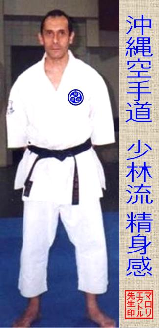

Seishinkan
Es una escuela de karate-do del linaje Shorin ryu 少林流 fundada en el 2005, el nombre surge de los múltiples viajes realizados por Maroli Héctor Sensei desde 1988 a Okinawa, Japón, para el estudio de la historia de las artes marciales, la instrucción y el perfeccionamiento técnico en el Okinawa Karate-do. La experiencia le posibilito comprender que todo lo aprendido debía conservarlo dentro de si mismo y perfeccionarlo hasta el regreso a su dojo donde transmitía la experiencia a sus alumnos e integrantes de la organización. Sei shin kan utiliza el kanji 感 Kan so pensamientos e impresiones, interpretando que, el karatedo reside en la mente y el cuerpo del practicante; a diferencia del kanji 館 Kan edificio o sala, utilizado en la totalidad de los nombres de las escuelas de Karate o Kobudo. La escuela es miembro de la Okinawa Karate & Kobudo Dendoshakai, organización internacional para la promoción y la enseñanza del Okinawa Budo & Bugei en occidente por maestros consejeros de Okinawa, Japón. Actualmente es reconocida en la República Argentina por la Federación Argentina de Karate & Kobudo Okinawense.
師範 Hanshi
- HECTOR E. MAROLI
- 9º Dan
- Técnico Deportivo en Karate
- Titulo Serie S / Nº 000063/05
- Universidad Nacional de Lomas de Zamora
- Registro Internacional de Instructor nº 78
Se inicia en la práctica de karate-do a mediados de la década del ‘70 siendo discípulo de Jorge J. Brinkmann (1945-1989) en la Kobayashi ryu Shidokan y la Sukunai Hayashi ryu Kenshinkan.
1984 Co-fundador de la Asociación Argentina de Karate-do, Persona Jurídica n° 421 Insp. Gral de Justicia.
1987 Fundador y director del Centro de Estudios Históricos del Karate-do, organización que se dedica a la investigación histórica del Karate y Kobudo.
1988/89 Realiza el 1er viaje a Okinawa, Japón a capacitarse en el sistema Sukunai Hayashi ryu, permaneciendo y entrenando por 6 meses con Shimabukuro Zenpo sensei del Seibukan Honbu Dojo; al regreso trabaja para instruir a sus alumnos y expandir la escuela.
1989 Participa del congreso Okinawa Bugeisai karate do realizado en Ginowan shi, Okinawa, Japón.
1990 Co fundador de la Unión Sudamericana de Karate do Seibukan (Nanbei Seibukan Karate-do Rengokai) con dojos en Argentina y Brasil, siendo el director técnico y presidente.
1991 Participa en calidad de Panelista del 1er Congreso Internacional de Salud y Deporte y 1er Congreso Nacional de Psicología Aplicada al Deporte. Realiza su tercer viaje a Okinawa.
1993 En su cuarto viaje a Okinawa, participa con su hermano Rubén D. Maroli y varios alumnos del Shimabukuro memorial, donde presenta oficialmente la forma técnica Kihon Keri kata (ichi) desarrollada en base a un trabajo iniciado con Jorge J. Brinkmann sensei.
1994 Con varios maestros Okinawenses y Argentinos es co-fundador de la Federación Argentina de Karate y Kobudo Okinawense, siendo su primer presidente. Ese mismo año organiza en la Argentina la visita de Shimabukuro Zenpo sensei para dictar seminarios de capacitación a la Seibukan Sudamérica del 4 al 14 de noviembre.
1995 Del 24 al 29 de agosto participa junto a la delegación de Federación Argentina de Karate y Kobudo Okinawense del pre-mundial de karate y kobudo realizado en Okinawa-Japón, desempeñando el cargo de presidente de la mencionada entidad nacional, es calificado referee internacional en la especialidad Kumite (combate). Es nombrado promotor oficial de los campeonatos mundiales de Okinawa Karate Kobudo por el gobernador de Okinawa Sr. Ota Masahide. Participa de los seminarios en el Okinawa Kenritsu Budokan de Japón dictados por Nagamine Shoshin sensei 10° Dan Matsubayashi ryu y Nakazato Joen sensei 10° Dan Shorinji ryu, ambos de karate do. Nakamoto Masahiro sensei 9° Dan lo acepta como discípulo en la especialidad de Kobudo realizando entrenamientos en el Bunbukan honbu dojo de la Okinawa Dento Kobudo Hozonkai.
1996 A consecuencia de su reputación en la docencia es invitado en abril por Jamal Measara sensei jefe instructor de la Asociación Alemana de Karate a dictar seminarios de metodología de entrenamiento en kata. Técnico de la Selección Nacional de Kata y Kumite de FAKKO. En noviembre se realiza el 1er Torneo Panamericano de Okinawa Karate Kobudo en Buenos Aires, siendo nombrado Director para los países del habla hispana de la Pan American Okinawa Karate Kobudo Working Committee.
1997 En agosto del 21 al 25 participa del Mundial de Okinawa Karate Kobudo en calidad de presidente de F.A.K.K.O, juez de kata en karate y kobudo, además de referee en Kumite. Es confirmado promotor oficial de los torneos mundiales. Participa de los seminarios de Kobudo en el Okinawa Kenritsu Budokan de Japón dictados por los jefes instructores de Akamine Eisuke sensei 10° Dan y Matayoshi Shinpo sensei 10° Dan. Realiza entrenamientos de Kobudo en el Bunbukan honbu dojo de la Okinawa Dento Kobudo Hozonkai, bajo las ordenes de Nakamoto Masahiro sensei 9° Dan. Técnico de la Selección Nacional de Kata y Kumite de FAKKO.
1999 Es comisionado junto a nueve líderes de Argentina promover el Okinawa Traditional Karate & Kobudo World Tournament. Técnico de la Selección Nacional de Kata y Kumite de FAKKO.
2001 Inicia la carrera universitaria de Técnico en Deportes de Combate en la Facultad de Ciencias Sociales, Universidad Nacional de Lomas de Zamora. Del 8 al 12 de agosto participa del Mundial de Okinawa Karate Kobudo Rengokai en calidad de presidente de F.A.K.K.O y referee en Kumite, realizado en la ciudad de Atlanta, USA., Técnico de la Selección Nacional de Kata de FAKKO.
2002 Realiza ayudantia en la cátedra de Filosofía en la carrera Técnicatura en Deportes de Combate de la Universidad Nacional de Lomas de Zamora dictando filosofía oriental.
2003 En agosto del 16 al 19 participa del Mundial de Okinawa Karate Kobudo realizado en Okinawa-Japón, en calidad de presidente de F.A.K.K.O y competidor Senior en kata de karate. Participa de los seminarios de Karate en el Okinawa Kenritsu Budokan de Japón dictados por Zenpo Shimabukuro Dai sensei 9° Dan. Egresa como Técnico Deportivo en Karate de la Facultad de Ciencias Sociales, Universidad Nacional de Lomas de Zamora.
2004 Docente de la cátedra de filosofía de las artes marciales, y Deontología profesional en la Técnicatura en Deportes de Combate, Facultad de Ciencias Sociales de la Universidad Nacional de Lomas de Zamora. Realiza Actualización y Perfeccionamiento en Entrenamiento para los Deportes Acíclicos, en la escuela de postgrado en actividad física, salud y deporte, Universidad Favaloro Hospital Universitario.
2005 Director de la Diplomatura Superior en Deportes de Combate, Curso de Extensión universitaria de la Facultad de Motricidad Humana y Deportes - Universidad Abierta Interamericana. Disertante en la tercera Convención Nacional de la Cultura Japonesa, realizada en la Biblioteca Nacional, Tema: "Historia del karate en Argentina". Fundador de las escuelas de Karate & Kobudo Seishinkan
2006 Director del Instituto Superior para los Deportes de Combate I.S.D.C. / Fundador de la Okinawa Karate & Kobudo Dendoshakai.
2007 El consejo de maestros de la Federación Argentina de Karate & Kobudo Okinawense le otorga el 7º Dan en reconocimiento a su trayectoria técnica y política.
2008 Autor y editor del libro KARA TE DO Método Shuri Te.
2009 Fundador de la okinawa Karate Kobudo Dendoshakai / Shihan instructor
2010 Miembro del Consejo de Maestros F.A.K.K.O
2018 El consejo de maestros de la Federación Argentina de Karate & Kobudo Okinawense le otorga el 9º Dan en reconocimiento a su trayectoria técnica y política.